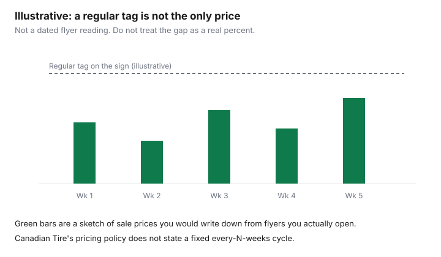

Household Items and Supplies · Canada
How Canadian Tire Sales Really Work: Price Cycles, Clearance, and When to Wait
Canadian Tire's own pricing policy, read 26 September 2026, is the place to start, not a story about a secret calendar. The e-flyer and canadiantire.ca offer limited-time sales, special buys, and items at everyday low prices. Regular prices shown "reflect the prices at which the products have been sold by Canadian Tire as of the date of issuance indicated." Market conditions may change prices without further notice. Associate dealers may sell for less. That is a description of a tag, not a promise that most people pay it.
This draft did not open a flyer archive that counts how often a housewares SKU drops, so it does not print a percent or a week interval. The pain people describe is real enough to justify a tracking habit. It is not real enough to justify a number this page did not read. Points on a purchase you were going to make are the CT Money guide. Matching a competitor is the price-match guide.
Key takeaways
- The pricing policy says regular prices are prices at which products have been sold as of the issuance date, and that dealers may sell for less.
- No every-N-weeks cycle was on that page. Sale dates differ by region, and dealers need not match an online price early.
- The price-match guarantee retrieved 26 Sep 2026: 30 days with a receipt against a local competitor, or 14 days against another Canadian Tire, within 200 km.
- A bonus multiplier is added to the 0.4 percent base. Read the offer before you assume it stacks.
- Forum threads can tip you to look. They are not the price.
Why Canadian Tire 'regular' prices are rarely what most people pay
The policy's sentence about regular prices is narrower than the sign looks. A regular price on the page is a price at which the product has been sold as of the issuance date on that flyer or page. It is evidence the tag existed, not evidence it is the price you should pay this Saturday. The same section says the e-flyer and the site also carry limited-time sales and special buys. Two prices can be "true" in that wording: a regular tag that was charged once, and a sale price sitting beside it.
People say they rarely pay the regular tag. This guide will not turn that saying into "40 to 60 percent off within a set number of weeks," because no dated flyer sample in this build showed that. If you care about a kettle, a vacuum, or a cleaner you buy more than once, write the price each time you see it, with the date and the store. After a few dated rows you will know whether waiting helped for that SKU. One anecdote is not a cycle.
Recurring sale cycles for housewares, small appliances, and cleaning gear
Treat a cycle as a pattern you test, category by category. Housewares, small appliances, and cleaning gear are the aisles worth a notebook because the same brands return. The pricing policy does not say those aisles refresh every two weeks, every month, or on a Thursday. It says sale effective dates may differ from the website and may vary by region, and that items may be available online at the sale price before they are available in store. Dealers are under no obligation to make promotional products available, or to match online prices, until the sale begins in their region.
Clearance is a different bucket. The returns page retrieved 26 September 2026 says clearance, final sale, or as-is merchandise is non-refundable and non-exchangeable. A deep tag in that bin is not a "cycle" you can replay next month, and it is not a purchase you can comfortably undo. If you cannot tell a promotional price from clearance, ask before you pay, and keep the receipt either way. The sketch below is labelled illustrative because it is not built from a flyer archive.

| Category or rule | What a dated source actually showed | What you do |
|---|---|---|
| Housewares, small appliances, cleaning gear | No interval and no percent on the pricing policy. Sale dates can differ by region | Track the model you buy. Wait only when your own dated rows show a lower price you can still use |
| Seasonal | Holiday decor may have extra return limits; the returns page says to read the receipt or ask the store | Do not assume a January return. Read the bottom of the receipt |
| Clearance, final sale, as-is | Returns page: non-refundable and non-exchangeable | Buy only if you will keep it. The low tag is the trade for the lost return |
| Pricing policy | Regular price means a price charged as of the issuance date. Dealers may sell for less. Online sale prices need not be matched until the regional sale starts | Ask which price the store is using: the site, the regional flyer, or the dealer's own tag |
| Price match after you buy | Guarantee text retrieved 26 Sep 2026: 30 days with receipt against a local competitor, 14 days against another Canadian Tire, stores in Canada within 200 km, bring a flyer or online ad | Re-read marks.com before a large claim. Direct fetch returned 403 |
Dealer-owned stores: why prices differ between locations
The pricing policy says Canadian Tire attempts to match online prices to in-store prices, and then lists the exceptions: online prices, selection, availability, and sale dates may differ by region. Because sale dates differ across the country, the website can show a sale before the store does. Dealers do not have to offer the promotional product, or match the online price, until the sale begins in their region. A second sentence says associate dealers may sell for less. Two stores can both be "right."
The site also states that Canadian Tire stores are owned and operated by independent dealers. That is why a phone quote from one town is not a promise at the next town. When you compare, write the store, not only the logo. The same dealer note is why a price-match conversation should name the page you are using. The associate is not required, on the pricing policy, to honour canadiantire.ca early.
Stacking CT Money bonus offers with sale prices
A sale price and a bonus are separate lines. Triangle's collecting page, opened 26 September 2026, says you can collect bonus CT Money on special promotions, you must be registered, and some offers require activation in the email, on Triangle.com, or in the app. If you skip activation, you do not get that offer. A bonus multiplier is based on the base rate of 0.4 percent and is added to what you would otherwise collect. The page's example: a $100 pre-tax purchase with a 20-times multiplier earns a bonus $8, calculated as 20 times 0.4 percent times $100. CT Money is earned on the pre-tax amount. If you redeem CT Money in the same transaction, you earn on the balance after that redemption.
The pricing-policy text also carries a flyer-style note that a bonus multiplier is added to the base, and one illustration combines a multiplier with a spend offer. That illustration is one offer's legal line, not a rule that every bonus stacks with every sale price. Read the offer in your account. Any portion paid with Canadian Tire Money does not qualify for the offer in the wording on that page. The full program, without a card ranking, is the household points guide.
Buying before a sale? Use the 30-day price-match window
If you already need the item, the retrieved guarantee is the after-purchase tool. Text retrieved 26 September 2026 from the Canadian Tire guarantee on marks.com says: if you have already purchased and a local competitor now has a lower price on an identical item, visit a Canadian Tire store within 30 days of purchase with your receipt, or within 14 days if you are matching another Canadian Tire store. The competing retail stores it describes are in Canada, within a 200 km radius of where you are requesting the match. You bring a competing flyer or online ad. A direct request to that URL returned 403, so open it again before you argue a day count at the desk. The steps and the exclusions are written out on the price-match guide and the adjustment guide.
This window is not a reason to buy a regular tag on purpose. It helps when you bought because you needed the item and a qualifying lower price shows up inside the days the guarantee names. It does not turn clearance into a match, and it does not force a dealer to adopt an online sale before that sale starts in the region. If the lower price is only on canadiantire.ca and the store says the regional sale has not started, the pricing policy is the sentence they are using.
Tracking tools and RFD threads for Canadian Tire deals
Use a tool that shows you a primary price: the current flyer in Flipp or on canadiantire.ca, the product page, and the receipt. The household Flipp guide is the weekly pass. Write the date beside every price. A tracker that only shows a percent off the regular tag is repeating the sign, not testing it.
Forum threads, including RedFlagDeals, are how some shoppers notice that a price moved. They are demand signals. This guide does not cite a thread as the price, the percent, or the schedule. If a post says a kettle is half off, open the flyer and the model number and write what those pages show. If they do not show it, the thread was a tip that failed. The same rule applies to a screenshot with no date. Your notebook of dated prices will beat a thread that cannot be checked. November and December appliance timing belongs on the sale calendar, not on a Canadian Tire cycle this page did not find.
Sources & date stamps
- canadiantire.ca pricing policy, read 26 Sep 2026: regular prices as of the issuance date; regional sale dates; dealers need not match online prices until the sale starts in their region; associate dealers may sell for less. Stores are independently owned in the dealer notes on the site.
- Canadian Tire returns page, text retrieved 26 Sep 2026: clearance, final sale, and as-is are non-refundable. Unopened items with a receipt within 90 days can be refunded or exchanged. Holiday decor may have extra limits printed on the receipt.
- Canadian Tire price-match guarantee on marks.com, text retrieved 26 Sep 2026: flyer or online ad; 30 days; 14 days versus another Canadian Tire; 200 km in Canada. Direct request returned 403.
- Triangle collecting and redeeming, and the program example on the pricing-policy text, opened 26 Sep 2026: base rate 0.4 percent; 20 times on $100 pre-tax is a bonus $8; activation required on some offers; earn on the pre-tax balance after redemption.
Frequently asked questions
Why are Canadian Tire regular prices so rarely paid?
The pricing policy on canadiantire.ca, read 26 Sep 2026, says regular prices shown are the prices at which the products have been sold as of the issuance date, and that the flyer also carries limited-time sales. Dealers may sell for less. This draft did not open a flyer archive that measures how often the regular tag is the price people pay, so it does not print a percent. Track the models you actually buy.
How often do Canadian Tire items go on sale?
No fixed interval was on the pricing policy. The page says sale effective dates vary by region and that online can show a sale price before the store does. Dealers are not obliged to match the online price until the sale begins in their region. Treat a rumour of a set cycle as a hypothesis you test with dated flyers.
Why do prices differ between Canadian Tire stores?
The same policy says online prices, selection, and sale dates may differ by region, and that associate dealers may sell for less. The site states that stores are owned and operated by independent dealers. Two towns can show two prices for the same item without either store ignoring the page you read.
Can I get the sale price if I bought just before?
The Canadian Tire guarantee on marks.com, text retrieved 26 Sep 2026, says that if you already bought and a local competitor has a lower price on an identical item, you visit a store within 30 days with the receipt, or within 14 days if you are matching another Canadian Tire. The competing store is in Canada and within 200 km, and you bring a flyer or online ad. A direct request returned 403, so re-read the page before a large claim.
Do CT Money bonus offers stack with sale prices?
The program text opened 26 Sep 2026 says bonus CT Money requires a registered member, some offers need activation, and a bonus multiplier is added to the base rate of 0.4 percent. CT Money is earned on the pre-tax amount, and on the balance after you redeem. One offer's legal line combined a multiplier with a spend offer. That line is not a promise that every bonus stacks with every sale, so read the offer you were sent.